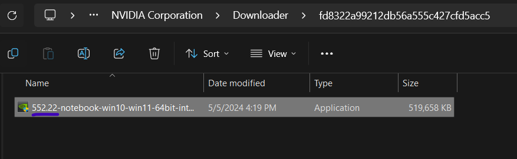

Nvidia Geforce Experience error when installing new driver, "an error occurred"!
Download the new version of the driver in Geforce Experience, navigate to C:\ProgramData\NVIDIA Corporation\Downloader\ and install the driver manually.This method may not work for everyone!
This error usually happens to me when updating the game driver via Geforce Experience app on windows. So what to do about it? well, you can download the driver via the app but install it manually.
How to resolve it?
Download the driver form the Geforce Experience app.
Navigate to this path C:\ProgramData\NVIDIA Corporation\Downloader, if you've install the app in the "C" drive.
You have to see the lates driver that you've downloaded from the app.
Check the version and make sure it's the exact driver you've already downloaded.

open the installer and install the driver.
Still can't install?
I just covered one simple solution, there should be other solutions to try out, one of which could be getting the driver for your specific GPU form Nvidia's website.